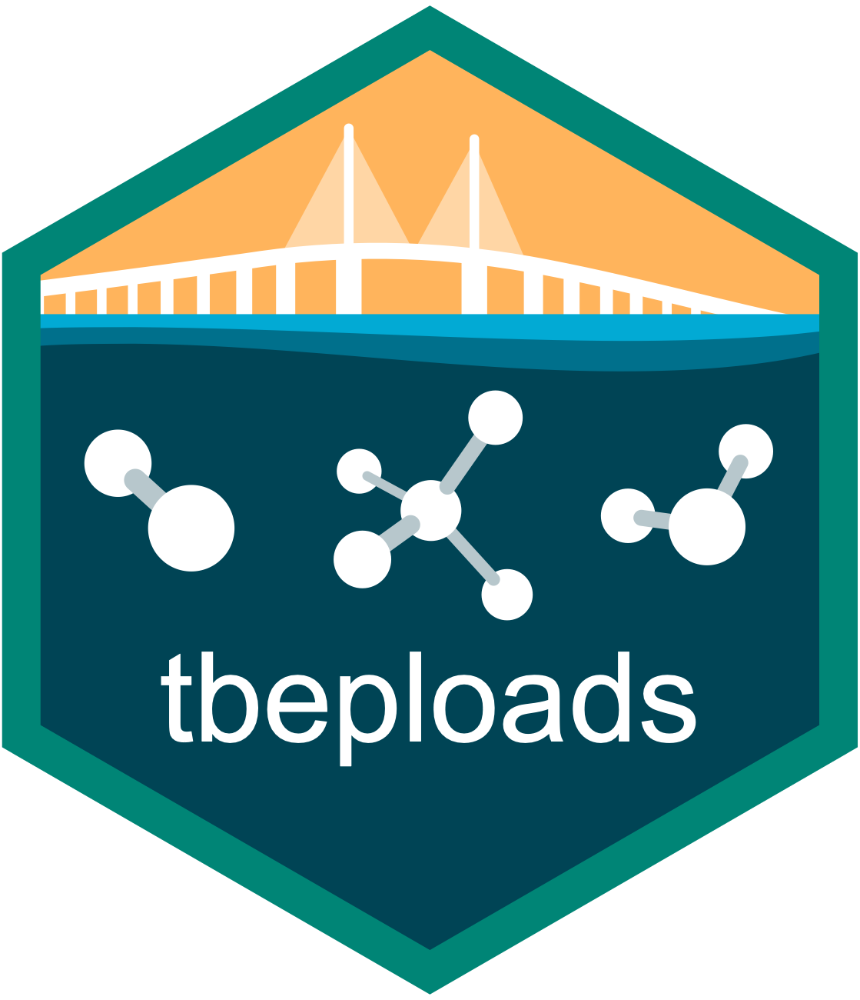

Utility function for non-point source (NPS) ungaged workflow to create land use and soil data
Source:R/util_nps_landsoil.R
util_nps_landsoil.RdUtility function for non-point source (NPS) ungaged workflow to create land use and soil data
Arguments
- tbbase
Input data frame returned from
util_nps_tbbase
Value
A data frame summarizing land use and soil by bay segment, sub-basin, drainage feature, CLUCSID, hydrologic group, and improved status.
Examples
data(tbbase)
util_nps_landsoil(tbbase)
#> # A tibble: 3,508 × 7
#> bay_seg basin drnfeat clucsid hydgrp improved area
#> <dbl> <chr> <chr> <dbl> <chr> <int> <dbl>
#> 1 1 02304500 CON 1 B 1 0.00757
#> 2 1 02304500 CON 1 C 1 0.00404
#> 3 1 02304500 CON 2 A 1 0.00108
#> 4 1 02304500 CON 2 B 1 0.0160
#> 5 1 02304500 CON 2 C 1 0.0477
#> 6 1 02304500 CON 2 D 1 0.00703
#> 7 1 02304500 CON 4 B 1 0.00779
#> 8 1 02304500 CON 4 C 1 0.00991
#> 9 1 02304500 CON 7 B 1 0.00125
#> 10 1 02304500 CON 8 B 0 0.00632
#> # ℹ 3,498 more rows